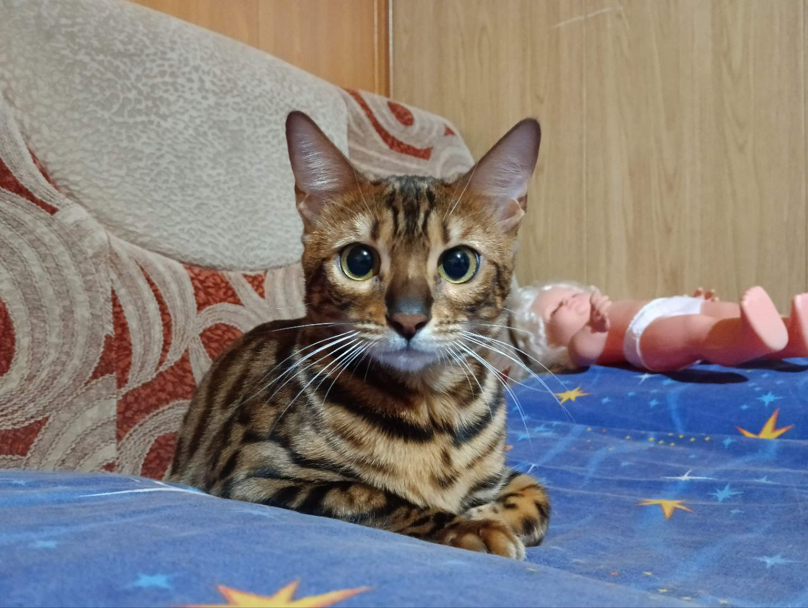

POPULAR DESTINATIONS
Hello Switzerland!
Our Swiss adventure story
Location location location! Zermatt Switzerland offers majestic landscapes that cannot be seen elsewhere. The Matterhorn for example. This peak is a sight to behold and seeing it upclose is more magical that we’ve ever imagined. ‘Want to enjoy a nice and cozy swiss breakfast! Well, Zermatt will never fail you.
One of the best hikes we've done so far...
Hightlights
The barns built in the 13th and 14th century
Riding the the amazing Bernina Express
The Matterhorn glacier cable car ride
Disclaimer
The COVID-19 pandemic has dealt a severe blow to the tourism business in Switzerland. Although it is a minor position in the Swiss export balance, it is nevertheless of considerable importance for those regions of the country that attract domestic and foreign visitors. As a consequence of the lockdown measures, combined with close borders and travel bans, tourism collapsed and only briefly and partly recovered in summer. Its future is uncertain and depends on people’s (future guests’) attitudes and decisions as much as on the economy, political measures and, of course, the progress of the pandemic.
The COVID-19 pandemic has dealt a severe blow to the tourism business in Switzerland. Although it is a minor position in the Swiss export balance, it is nevertheless of considerable importance for those regions of the country that attract domestic and foreign visitors. As a consequence of the lockdown measures, combined with close borders and travel bans, tourism collapsed and only briefly and partly recovered in summer. Its future is uncertain and depends on people’s (future guests’) attitudes and decisions as much as on the economy, political measures and, of course, the progress of the pandemic.
LET'S BUILD A COMMUNITY